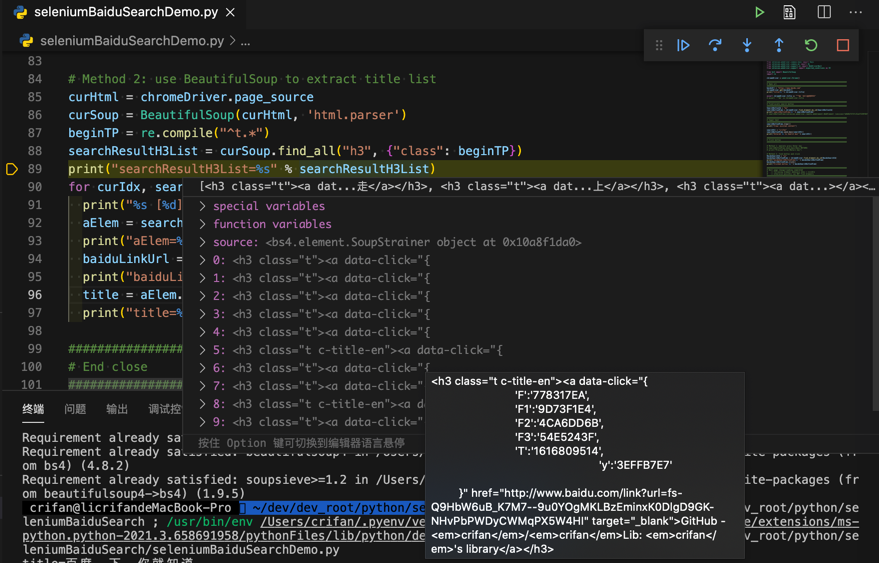

获取元素属性
获取元素属性的典型用法，比如：
- a元素
- 获取a的href链接
aElement.get_attribute("href")
- 获取a的文本值
aElement.text
- 获取a的href链接
举例：解析提取百度搜索结果
对于页面：

的html是：
<h3 class="t c-title-en"><a data-click="{
'F':'778317EA',
'F1':'9D73F1E4',
'F2':'4CA6DD6B',
'F3':'54E5243F',
'T':'1616767238',
'y':'E0FFFFD5'
}" href="https://www.baidu.com/link?url=At4gIa9u4J7k8FEfq7sSEhpeHxhzyntQwEi8zTkeWpSbv_34ZNkD1N9UuQeOCWc4&wd=&eqid=919e8ff000236bc300000004605de906" target="_blank">GitHub - <em>crifan</em>/<em>crifan</em>Lib: <em>crifan</em>'s library</a></h3>
已经通过代码：
searchResultAList = chromeDriver.find_elements_by_xpath("//h3[contains(@class, 't')]/a")
然后就可以用htmlElement.get_attribute("href")去获取href的url链接：
for curIdx, curSearchResultAElem in enumerate(searchResultAList):
print("%s [%d] %s" % ("-"*20, curIdx, "-"*20))
aHref = curSearchResultAElem.get_attribute("href")
print("aHref=%s" % aHref)
类似的，想要获取文本值，用text：
aText = curSearchResultAElem.text
print("aText=%s" % aText)
此处输出：
-------------------- [0] --------------------
aHref=http://www.baidu.com/link?url=LMF5vQH-QgOuEhaq5huV3bLHlwVSDbVwv2g6vUYJ9AjmaCyIWKuL8f1YR5uOGzUc
aText=在路上on the way - 走别人没走过的路,让别人有路可走
-------------------- [1] --------------------
aHref=http://www.baidu.com/link?url=n4QoZVrJ5gncFIpJZhRcdmoA-oEmVewHEriXaLesj_wuypw3ZGebZ8sgC56-3ueD
aText=crifan – 在路上
...
特殊：对于html的解析，一般更常用专用的库：BeautifulSoup
对于html的解析，元素的获取等操作，往往会换专用的html解析库：BeautifulSoup
举例，此处对应代码：
# Method 2: use BeautifulSoup to extract title list
curHtml = chromeDriver.page_source
curSoup = BeautifulSoup(curHtml, 'html.parser')
beginTP = re.compile("^t.*")
searchResultH3List = curSoup.find_all("h3", {"class": beginTP})
print("searchResultH3List=%s" % searchResultH3List)
for curIdx, searchResultH3Item in enumerate(searchResultH3List):
print("%s [%d] %s" % ("-"*20, curIdx, "-"*20))
aElem = searchResultH3Item.find("a")
# print("aElem=%s" % aElem)
baiduLinkUrl = aElem.attrs["href"]
print("baiduLinkUrl=%s" % baiduLinkUrl)
title = aElem.text
print("title=%s" % title)
调试效果：

最终，同样的输出：
-------------------- [0] --------------------
baiduLinkUrl=http://www.baidu.com/link?url=DVUbOETLyMZLC5c_V7RJReScFExnTjXjyTsO_QO_0rOL0vSE4mMNIPaZLH7iIaHI
title=在路上on the way - 走别人没走过的路,让别人有路可走
-------------------- [1] --------------------
baiduLinkUrl=http://www.baidu.com/link?url=xA8mzlRBwfRb_I-PgUMj9_COWGmdEr-GcNo-DlxCqYzTKYsjqpLrmQImHO5X41Qy
title=crifan – 在路上
...